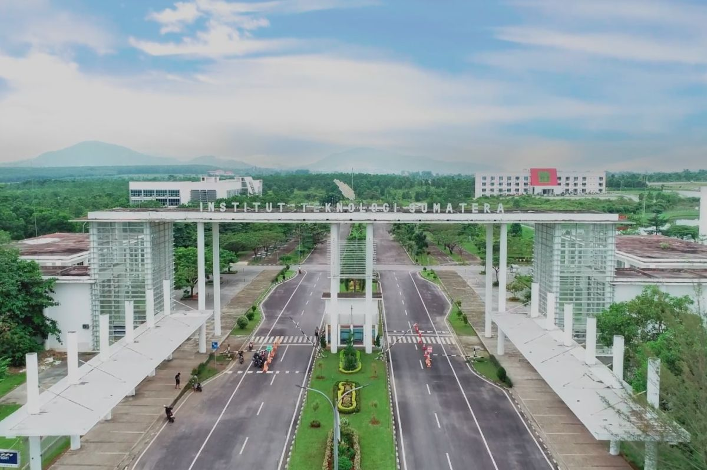
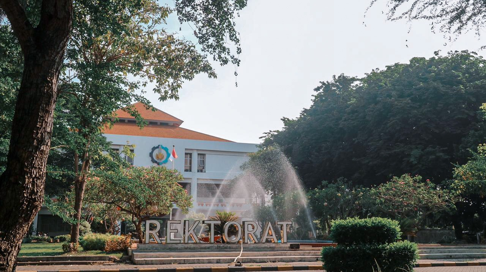

Institut Teknologi Sumatera
Institut Teknologi Sumatera adalah perguruan tinggi negeri di Lampung Selatan, Lampung, Indonesia. ITERA memiliki tiga jurusan dan 40 program sarjana, dengan 1 program pascasarjana di bidang fisika.
Read more...
Institut Teknologi Sumatera, disingkat ITERA, adalah sebuah perguruan tinggi negeri yang terdapat di Provinsi Lampung di Pulau Sumatra.
Lokasinya berada di antara wilayah Kabupaten Lampung Selatan dengan Kota Bandar Lampung. ITERA didirikan berdasarkan Peraturan Presiden Nomor 124 Tahun 2014 tentang Pendirian Institut Teknologi Sumatera (Lembaran Negara Republik Indonesia Tahun 2014 Nomor 253) yang ditetapkan
Presiden Republik Indonesia Dr. H. Susilo Bambang Yudhoyono pada tanggal 6 Oktober 2014 dan diundangkan tanggal 9 Oktober 2014.
Walaupun peresmiannya dilaksanakan pada tahun 2014, tetapi ITERA sudah memulai kegiatan akademik dengan menerima mahasiswa baru sejak tahun 2012-2013.
Selain ITB dan ITS, dengan dibukanya ITERA dan ITK, maka pemerintah Indonesia memiliki empat institut teknologi.
Kunjungi Halaman ITERA

Institut Teknologi Bandung
Institut Teknologi Bandung adalah universitas riset nasional yang berlokasi di Bandung, Indonesia. Institut ini telah menghasilkan banyak pemimpin terkemuka di bidang sains, teknik, politik, bisnis, akademisi, dan budaya.
Read more...
Institut Teknologi Bandung (ITB) merupakan sekolah tinggi teknik pertama di Indonesia yang didirikan pada tanggal 2 Maret 1959 di Jawa Barat yang mengemban misi pengabdian ilmu pengetahuan dan teknologi untuk memajukan Indonesia. Lahir dalam suasana penuh dinamika yang dilandasi dengan semangat perjuangan Proklamasi Kemerdekaan, ITB hadir untuk mengoptimalkan pembangunan bangsa yang maju dan bermartabat.
Kunjungi Halaman ITB

Institut Teknologi Sepuluh Nopember
Institut Teknologi Sepuluh Nopember (ITS) merupakan Perguruan Tinggi Negeri Badan Hukum (PTNBH) berkelas dunia yang berkontribusi terhadap kemandirian bangsa dan menjadi rujukan dalam pendidikan, penelitian, pengabdian kepada masyarakat, serta pengembangan inovasi, terutama yang mendukung industri dan maritim.
Read more...
Institut Teknologi Sepuluh Nopember melekat dengan sejarah perjuangan kemerdekaan Republik Indonesia. Berdirinya ITS dipelopori oleh para pahlawan kemerdekaan Indonesia sejak tahun 1957, dengan melibatkan dr. Angka Nitisastro, Soedjasmono, Kyai Haji Yahya Hasyim, dan didukung oleh Roeslan Abdulgani.
Motto baru ITS Memajukan Kemanusiaan adalah menumbuhkan semangat baru dalam menciptakan inovasi melalui teknologi dan ilmu pengetahuan bagi masyarakat. Motto tersebut dipilih menjadi motivasi baru dalam terus berperan aktif bagi peradaban manusia sesuai nilai-nilai ITS. Vivat!
Kunjungi Halaman ITS